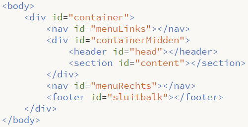

Positioneren geavanceerd
| Voorbeeld 1 |
Kijk goed naar onderstaand voorbeeld. Dit hebben we nog niet eerder gemaakt. We hadden altijd een menubalk links met daarnaast of erboven een head. Zoals je kunt zien staan de head en content tussen twee menu’s in. Om dit zo voor elkaar te krijgen moet je een extra “container” divisie aanmaken.
We kennen allemaal de standaard container waarbinnen we alle divisies plaatsen. Om bovenstaande voor elkaar te krijgen, moeten we de divisie head en content ook in een aparte divisie plaatsen. Je krijgt dus een divisie menuLinks, containerMidden, menuRechts, sluitbalk. Binnen containerMidden ga je vervolgens de divisie van head en content toevoegen.
Een voorbeeld van je HTML structuur, zonder de tekst erin, zie je hier onder
| Opdracht 1: namaken |
|
Kijk goed naar voorbeeld 1. Maak deze na met de volgende eigenschappen. Open een nieuw HTML5 bestand.
Sla het bestand op als Opdracht18-1.html. |
Je ziet nu dat er ontzettend voor divisies worden geopend en weer gesloten. Het is dus van belang om goed in te springen zodat het enigzins overzichtelijk blijft. Om meer overzicht te creëren kunnen we, behalve de divisies die we nu gemaakt hebben, ook de structuur tags uit hoofdstuk 4 gebruiken. Dit is voor zoekmachines beter en voor ons eigen overzicht ook makkelijker. Je moet gaan bepalen welke structuur tags je kunt gebruiken.
| Opdracht 2: structuur tags toevoegen |
|
Open opdracht18-1.html. We gaan een aantal divisies veranderen in structuur tags.
Sla het bestand op als Opdracht18-2.html. |

| Opdracht 3: structuur tags toevoegen |
|
Open de bestanden opdracht16-6.html en opdracht17-1.html.
|
Tegenwoordig wordt er veel gebruik gemaakt van breedbeeld schermen. Het staat dan netjes om je website, horizontaal uit te lijnen. Dit kun je doen door de #container in de CSS een margin: 0px auto; mee te geven. Hiermee geef je aan dat de margin aan de bovenkant 0 pixels moet zijn en links en rechts automatisch berekend moet worden. Daardoor wordt de container in het midden van de pagina geplaatst.
| Opdracht 4: uitlijnen |
|
Open het bestand Opdracht18-2.html
Sla het bestand op als Opdracht18-4.html. |
Je merkt dat als je de pagina in het midden uitlijnt, dat de achtergrond wit is. Om dit wat leuker te maken kun je de body een achtergrond-image geven. Het nadeel hiervan is dat dit plaatje zo groot moet zijn dat niet herhaalt wordt op de pagina. Omdat je nooit weet wordt voor resolutie iemand gebruikt, is dit dus eigenlijk niet haalbaar. Oplossing hiervoor is een plaatje die op zichzelf “aansluit”. Dat wil zeggen dat je deze dus horizontaal maar misschien ook verticaal herhaalt moet kunnen worden, zonder dat je het ziet.
Bekijk dit plaatje. Je moet goed kijken maar je ziet dat het een doorlopende kleur is van grijs naar wit. Deze is maar 10 pixels breed. Dat is prima, want het plaatje wordt toch steeds herhaald. Je koppelt de afbeelding aan het body element, in de CSS. Als je deze vervolgens alleen horizontaal herhaald, loopt deze dus precies door. Door middel van background-repeat: repeat-x; wordt de achtergrond alleen horizontaal herhaald.
| Opdracht 5: achtergrond afbeelding |
|
Open het bestand Opdracht18-4.html
Sla het bestand op als Opdracht18-5.html. |